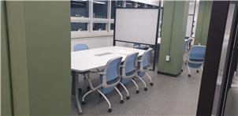
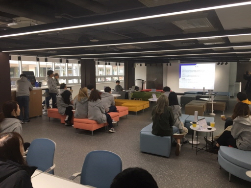
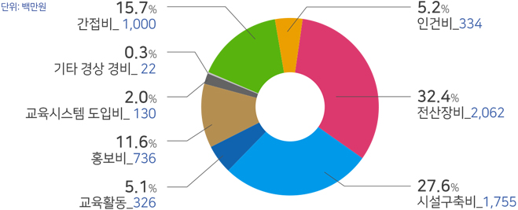

제2장 운영
혁신교육을 위한 환경
1. 환경 준비(개포/서초)
1) 서버 구축
서버 인프라는 에꼴42 교육시스템의 핵심요소 중 하나다. 가르치는 교수가 없는 에꼴42 교육의 특성상, 교육생은 교육시스템을 통해 스스로 학습해야 하는데, 서버 인프라는 교육시스템을 안정적이며 효율적으로 운영하는데 뼈대 역할을 하기 때문이다. 재단은 2019년 10월 1일 에꼴42와 라이선스 계약을 체결했다. 계약 체결 후, 에꼴42는 교육시스템 구축에 필요한 최소한의 하드웨어 장비 관련 정보를 보내왔다. 재단은 그 자료를 바탕으로 국내 실정에 맞춰 장비 구매에 들어갔다. 연간 1,000명의 교육생 배출을 목표로 하고 있어 구매해야 할 장비의 수량은 총 500여대에 달했다. 재단이 교육시스템 구축을 위해 구매해야 할 장비는 클라이언트 PC 454대, 서버 10여대, 네트워크 장비 40여대 등이었다. 또한 에꼴42의 교육시스템에 커스터마이징(customizing)된 최적화 장비들로 인해 소요기간은 구매 발주에 들어간 시점부터 최소 7~8주 정도가 필요했다. 재단의 모든 장비구매는 공개입찰을 통해 진행됐다. ‘혁신적인 소프트웨어 인재 양성’ 이라는 공공의 목적을 위해 설립된 조직에 걸맞게 업무추진 과정은 공정하고 투명하게 이루어졌다. 구매입찰의 경우, 입찰공고 후 계약자 선정까지는 최소 15일 정도의 기간이 소요되었다. 장비 수급에 필요한 7~8주를 고려하면, 장비구매는 결국 공고일부터 약 10주의 기간이 필요한 셈이었다. 여기에 통신시설 공사와 재단 사무실 개소식, 에꼴42의 교육시스템 구축을 위한 방문까지 어느 하나 소홀히 할 수 없는 일정들이 기다리고 있었다. 2019년 9월 사무국이 구성된 것을 고려하면, 이 모든 일정을 소화하기에 굉장히 빠듯하게 진행됐다. 그럼에도 불구하고 2019년 9월 재단 사무국 구성을 시작으로 3개월여 만인 2019년 12월 하드웨어 장비 구축을 완료했다. 그 과정에서 일부 예상치 못한 돌발변수가 발생하기도 했으나 재단 직원들의 긴급대처로 차질없이 계획대로 장비 구축을 완료했다. 재단은 에꼴42와 라이선스 계약 체결 후 국내 실정에 맞는 장비와 가격조사 등의 시장조사를 마친 후 2019년 10월 28일 입찰공고를 냈다. 11월 4일 개찰을 통해 최저가낙찰 업체를 선정했다. 납품 기일인 11월 12일~ 13일에 일부 품목이 납품됐으나 해외제조 및 배송, 통관절차 등으로 인해 일부 품목은 납품 기일보다 2주일이 늦은 12월 27일에 납품이 완료됐다. 2020년 1월, 재단은 교육시스템 구축을 위해 에꼴42에서 파견된 인프라팀 3명과 재단 소속 직원 3명, 인턴 4명 등 총 10명으로 구성된 시스템 구축팀을 발족했다. 특히 그중 인턴4명은 각각 ‘에꼴42’와 ‘42실리콘밸리’ 교육생 출신으로 에꼴42의 교육시스템을 이해하고 사용해 본 경험자들이었다. 10명의 구축 팀원은 각각 네트워크 및 서버 셋업, 클러스터 컴퓨터 설치, 보안정책 설정, 설치내용 기록 등의 역할을 담당했다.< 에꼴42 인프라팀과 함께 >
시스템 구축팀은 수시로 교육시스템 설치와 관련한 회의를 가졌다. 특히 에꼴42 인프라팀은 교육공간을 둘러보며 장비의 상태와 구성을 일일이 점검하고 확인했다. 재단이 구입한 장비는 에꼴42에서 제시한 규격의 장비였다. 하지만 우리나라 실정에 따라 구입할 수 없는 장비들은 다른 제품으로 대체했다. 대체된 장비에 대한 설정은 외부 엔지니어와 함께 공동으로 진행했다. 에꼴42 인프라팀이 국내에 머무는 기간은 10일이었다. 그 10일 동안 클러스터에 설치되어 있는 아이맥 429대와 서버 5대, 클러스터와 사무실, 서버실과 통신실 간의 네트워크 장비들의 설정을 완료해야 했다. 장비설정은 에꼴42의 설계에 따라 진행되었다. 재단은 보안정책과 실제 교육시스템 운영계획에 따른 네트워크 구성 등을 결정했다.< 아이맥 >
인프라 구축기간 동안 재단의 중요한 업무 중 하나는 교육시스템 운영에 필요한 노하우를 배우고, 그 과정을 하나하나 기록하여 정리하는 것이었다. 예컨대 이런 것들이었다. 5개의 학습 서버는 각각 어떤 역할을 하는지, 시스템 장애가 발생했을 때는 어떻게 대처해야 하는지, 클러스터에 설치된 컴퓨터는 어떻게 관리하는지, 프랑스 에꼴42에 설치된 서버와는 어떻게 통신하는지 등등 교육시스템 운영에 필요한 것을 총망라했다. 에꼴42의 교육시스템은 끊임없이 변화해 오고 있었다. 이러한 변화의 목적은 효율적인 교육시스템 운영을 위해서이기도 하지만 무엇보다 새로운 도전과 실험이 에꼴42의 핵심가치이기 때문이었다. 실제로 42서울에 설치된 서버구성 가운데 일부는 에꼴42에서도 처음 사용하는 장비들이었다. 이제 막 신설된 재단 입장에서는 에꼴42도 사용해 보지 않은 시스템을 도입하기에는 위험부담이 있었다. 그럼에도 재단은 에꼴42가 추구하는 핵심가치에 동의했기에 새로운 시스템 도입을 과감히 결정했다. 10일간 진행된 시스템 설치가 모두 끝났다. 그리고 2020년 1월 20일, 재단은 약 300명의 교육생과 함께 첫번째 집중교육(La Piscine)을 시작했다. 에꼴42 인프라팀 3명 중 2명은 프랑스로 돌아가고 1명은 42서울의 운영지원을 위해 1주일 더 머물렀다. 첫번째 집중교육(La Piscine)이 시작되고 처음 며칠 동안 사소한 문제들이 발생했지만 직원들의 빠른 대처로 차질없이 진행되었다. 그런데 첫번째 시험 날, 문제가 발생하고 말았다. 서버 중 1대에서 메모리 누수 현상이 일어나 시험 도중에 서버 장애가 발생했다. 교육생들은 모두 하나같이 어리둥절하며 난감한 표정들이었다. 교육생 자신의 실수에 의한 오류인지 아니면 시스템 장애인지 확인할 수 없기 때문이었다. 시스템 운영 담당자들이 긴급히 응급조치에 나서 서버 장애 문제를 해결했다. 재단은 교육생들에게 서버장애로 인한 불이익을 받지 않도록 시험시간을 재조정하고 시험을 정상적으로 마쳤다. 재단은 이와 같은 서버 장애가 발생하는 것을 예방하기 위해 문제의 근본 원인을 조사했다. 문제의 원인은 새롭게 도입한 분산 소스 버전 관리시스템인 GIT서버의 오픈소스 솔루션에 있었다. 근본적인 문제 해결을 위해서는 새로운 솔루션을 사용해야 했다. 하지만 첫번째 집중교육(La Piscine)을 이미 시작했기 때문에 당장 새로운 솔루션으로 바꿀 수 없는 상황이었다. 임시방편으로 장애발생에 대비하여 시스템 운영 인력을 3교대로 24시간 풀가동했다. 그렇게 4주간의 집중교육(La Piscine)을 무사히 마친 후, 안정적인 새로운 솔루션으로 교체했다. 재단의 새로운 도전과 실험정신의 경험을 바탕으로 전 세계 11개국 16개 42 캠퍼스에서도 새로운 솔루션을 도입할 수 있게 되었다.2) 건물 리모델링
(1) 기본구상
재단은 서울시 강남구 개포디지털혁신파크를 교육공간 및 사무공간으로 사용하고 있다. 서울시가 연간 500여명의 소프트웨어 핵심인재 양성을 목표로 재단에 5년간 무상으로 제공했다. 개포디지털혁신파크는 연면적 824평의 새롬관 5층, 연면적 238평의 마루관 5층 두 동으로 구성되어 있다. 공간 구분은 교육생들의 학습공간과 직원들의 업무공간으로 되어 있다. 과거 외국인학교 건물로 사용되었던 새롬관과 마루관은 각각 1980년과 1988년에 준공된 후, 2016년 전면 리모델링 공사를 했다. 건물 외관은 전형적인 학교 건물 형식이지만 내부는 입주업체 용도에 따라 꾸며져 있어 재단의 용도에 맞도록 내부 리모델링이 필요했다. 2019년 3월, 재단의 교육목적과 취지에 맞는 공간 조성을 위해 건물 리모델링 구상을 시작했다. 당시는 재단설립 전이라 ‘이노베이션 아카데미 설립추진단’ 주도아래 전담기관인 정보통신기획평가원의 혁신인재팀이 행정업무를 담당했다. 정보통신기획평가원 혁신인재팀은 추진단의 기본구상을 구체화시켜 줄 전문업체 선정을 위해 공공입찰을 진행했다. 공공입찰을 통해 선정된 업체는 ▲기초현황 조사 ▲사례조사 분석 ▲리모델링 계획 수립 ▲비용 추정 ▲종합 검토 결과 등 5단계에 거쳐 리모델링 공사를 진행했다. 건물 리모델링의 핵심 콘셉트는 이노베이션 아카데미의 교육목적인 ▲창의성(Creativity) ▲비판적 사고(Critical thinking) ▲도전정신(Challenge) ▲융합역량(Convergence) ▲공감과 협업(Collaboration) 등 5C 인재양성을 위한 혁신적인 교육공간이다. 국내외 사례를 분석하여 ▲각자의 무한한 창의력을 뿜어내기 위한 발판공간(창의성) ▲치열한 고민으로 비판적 사고능력을 기르는 집중공간(비판적 사고) ▲각자의 도전정신으로 창조하는 공간(도전정신) ▲다양한 분야를 습득하는 공간(융합역량) ▲협업하며 서로 상생하는 공간(공감과 협업) 등 소프트웨어 분야의 지속적 혁신성장을 위한 핵심인재들의 창의, 융합, 협업의 장이라는 콘셉트로 혁신적 교육방법을 실현할 수 있는 공간을 구체화시켜 갔다. 그 다음은 구체화된 콘셉트에 따른 실질적인 추진전략을 수립했다. 정보통신기획평가원 혁신인재팀은 콘셉트에 맞는 공간설계와 시공을 위해 필요한 법률적 검토사항부터 적정비용 산정까지 다각도로 사업의 추진전략을 마련했다.
(2)기초 및 실시설계
정보통신기획평가원(IITP) 혁신인재팀은 공간 리모델링 추진전략 수립을 마친 2019년 5월, 설계와 시공 및 감리를 위한 업체 선정에 들어갔다. 약 5개월 후인 11월 초에 이노베이션 아카데미의 개소식이 계획되어 있었다. 7월 중으로 업체선정을 완료해야 개소식 일정을 맞출 수 있었다. 정보통신기획평가원 혁신인재팀은 조달청의 의견에 따라 기초 및 실시설계 업체를 먼저 선정했다. 일정이 늦어진 만큼 신속하게 설계용역에 착수했다. 그리고 설계업체에는 공사 기간을 줄이기 위한 최선의 방법을 선택하면서 추진단이 갖고 있는 공간에 대한 기본구상을 반영해 설계하도록 전달했다.< 설계도면 >
(3)리모델링 공사
2019년 9월, 재단 사무국이 구성됐다. 이때부터 재단 사무국은 정보통신기획평가원 혁신인재팀과 함께 리모델링 공사를 담당했다. 재단은 리모델링 공사 일정을 고려하여 개소식 일정을 12월로 조정했다. 공사일정이 조정되면서 서버와 교육용 컴퓨터 등의 납품일정 또한 변경되었다. 에꼴42 인프라팀의 내한 일정도 조정했다. 9월에 리모델링 공사 설계를 끝내고 10월이 되어서야 시공업체들이 최종 선정되었다. 10월 22일 각 시공업체 담당자들이 공사현장에 모여 ‘킥오프 회의’를 가졌다. 매주 화요일 공정회의를 개최하고, 공사 일정을 맞추기 위해 빠른 결정이 필요한 사항은 신속히 반영하기 위해 매일 오전 8시 아침회의를 하는 것으로 결정했다. 재단은 시공업체들과 수시로 커뮤니케이션할 수 있는 채널을 만들었다. 각 부분 담당자들은 메신저, 이메일, 전화 등 이용할 수 있는 모든 채널을 열어 두기로 했다. 10월 23일부터 건물 내부 철거가 시작됐다. 철거에 앞서 재단은 서울시와 철거범위에 대한 협의를 이미 끝냈다. 아직 퇴거하지 않은 입주업체와 퇴거일정 협의도 마무리했다. 철거와 관련한 모든 협의가 끝나자 시공업체들은 곧바로 철거에 들어갔다. 공사에 속도를 내기 위해 사전협의가 없었던 시설물은 모두 철거하기로 했다. 철거가 시작되면서 재단 사무국은 시설물 철거로 인해 발생하는 폐기물 처리업체를 선정했다. 폐기물 처리는 폐기물 관리법에 의거해 처리하고 처리 내용은 한국환경공단이 운영하는 올바로시스템 (www.allbaro.or.kr)에 등록했다.< 올바로시스템(www.allbaro.or.kr) >
시설물 철거를 끝낸 후, 본격적인 리모델링 공사가 시작됐다. 재단은 교육시스템 구축에 따른 시설 설비를 위해 통신과 전기 시공업체와 커뮤니케이션을 했다. 통신공사는 에꼴42가 요구한 장비와 호환성이 핵심 이슈였다. 전기공사는 학습용 컴퓨터 454대와 냉난방기가 동시에 작동할 경우, 변압기 과부하로 전기공급이 끊어질 수 있는 문제가 제기됐다. 실시설계에서는 학습시스템에 대한 사양이 반영되지 않아 설비 변경이 필요했다. 통신장비의 추가발주를 비롯하여 설계와 다른 사양의 냉난방기 발주도 필요했다. 재단은 신속하게 추가발주를 위한 행정작업을 진행했다. 정보통신기획평가원 혁신인재팀은 인테리어 시공업체와 커뮤니케이션했다. 인테리어 시공은 통신이나 전기공사의 사전 공정을 담당하고 있어 무엇보다 일정 관리가 중요했다. 설계도면과 현장도면과의 차이로 인한 도면변경에 대한 의사결정도 계속해서 요구됐다. 리모델링 공사가 3분의 1가량 진행되었을 무렵, 조명업체를 선정하고 조명설치 작업을 시작했다. 조명설치는 인테리어 공사와 전기시설 공사간 일정 조정이 무엇보다 중요했다. 조명설치 전에 천장마감을 진행하거나 조명의 크기를 고려하지 않고 조명 위치를 선정할 경우, 조명 설치 자체가 어렵기 때문이었다. 재단은 차질 없는 공사 진행을 위해 빠른 의사결정을 해야 했다. 바닥시공과 전기 시설공사가 마무리되자 가구와 학습용 컴퓨터 및 보안장비 등의 기자재가 납품되기 시작했다. 아직 마무리 공정이 남은 작업인력들이 공사를 하고 있어 기자재 이동을 위한 동선확보가 필요했다. 각 시공업체는 각 층별로 시공범위와 시간을 달리하여 동선을 구분했다. 재단 사무국은 동선을 구분하기 위해 주말과 야간시간까지 확보해 기자재를 이동하고 설치했다. 마지막 공정은 건물 내외부 사인물 설치였다. 재단의 전 임직원이 사인물 제작에 참여했다. 재단의 이미지가 명확히 반영된 디자인과 문구가 필요했기 때문이었다. 수시로 내부 메신저를 통해 직원들과 디자인을 공유하고, 사인물에 들어갈 문구를 논의했다. ‘42서울’의 브랜드에 걸맞게 서울의 4대 궁이름에서 아이디어를 얻어 각 회의실 명칭을 경복궁, 덕수궁, 창경궁으로 결정했다. 학습공간은 프로그래밍 이름을 따서 C++, C, Swift 등으로 그 이름을 붙였다. 모든 리모델링 공사일정은 시공청소를 끝으로 개소식(2019.12.20)을 하루 앞둔 12월 19일 완료됐다. 10월 23일 리모델링 공사를 시작하여 두 달이 채 걸리지 않은 48일만에 공사를 마무리했다.3) 가구준비
재단은 이노베이션 아카데미를 혁신 인재 양성의 산실에 걸맞은 교육 공간으로 조성하기 위해 가구 구매에 총 7억 2,400만 원의 예산을 배정했다. 2019년 9월, 재단은 최적의 가격에 최적의 제품을 구매하기 위해 입찰공고를 내고, 조달청의 경쟁입찰을 통해 업체를 선정했다. 가구 납품업체는 재단이 요구하는 가구의 디자인과 내구성 등 품질과 생활 편의성이 뛰어난 것은 물론, 유지보수가 쉬운 데다가 가구를 직접 제작하고 설치할 수 있었다. 재단은 업체와 기술협상을 통해 품질과 이용 편의성이 뛰어나고 건물 내부공간 및 시설물과 조화를 이루는 가구를 결정했다. 그후 재단의 시설 담당자는 이노베이션 아카데미의 정체성에 부합하고 교육생과 임직원들이 사용하는 데 불편함이 없는 교육 공간 구성을 위해 업체 본사와 공장이 소재한 경기도 파주와 서울의 재단 사무실을 수시로 오갔다. 2020년 12월 6일, 재단은 임직원 30여 명과 교육생 400여 명이 사용할 의자 774개, 책상 60개, 서랍장 50개, 디지털 로커 23개 등을 개포디지털혁신파크 내 새롬관 및 마루관에 설치했다. 재단의 입찰공고 후, 56일 만에 개포디지털혁신파크는 혁신인재 양성에 최적화된 교육 공간으로 탈바꿈됐다.< 개포디지털혁신파크의 교육과 직원들을 위한 작은 쉼터 >
< 이노베이션 아카데미 아이덴티티를 형상화한 쇼파 >

< 교육 중 바로 회의할 수 있게 꾸민 간이 회의실 >
4) 소방 안전
2020년 4월 22일, 재단은 설립 이후 처음으로 전 임직원들이 참여한 가운데 개포디지털혁신파크에서 소방훈련을 실시했다. 소방훈련은 재난 발생을 예방하고, 화재 발생 시 신속하고 효율적으로 대처하여 인명 및 재산피해를 최소화하기 위한 소방교육이다. 소방교육은 법적으로 상반기와 하반기 등 연 2회 실시하는 훈련으로 전 임직원 참여가 필수적이다. 첫 실시된 재단의 소방교육은 시설관리팀 박대붕 매니저와 개포디지털 혁신파크 관리사무소가 맡아서 이론교육과 실습교육 순으로 진행했다. 소방교육은 화재 예방, 소방시설 설치·유지 및 안전관리에 관한 법률(약칭 소방시설법) 제20조(특정소방 대상물의 소방안전관리) 및 시행령 제24조(소방안전관리대상물의 소방계획서 작성 등)에 따라 이론교육 및 실습교육으로 구성되어 있다.  이론교육은 이노베이션 아카데미에 설치된 기본적인 소방시설물에 대한 설명과 사용방법, 소방시설물 위치도, 구역별 대피방법, 대피 장소에 대한 교육과 화재 발생 시 조직별 임무에 대한 교육으로 진행됐다. 실습교육은 소화기 사용법, 소화전 사용법, 자동심장충격기(AED) 사용법, 심폐소생술(CPR) 등으로 구성하였고, 직원들이 최대한 많이 참여하여 직접 사용해 볼 수 있도록 교육을 진행했다. 4월 22일 실시한 재단의 첫 소방교육으로 2020년 상반기 소방훈련을 마쳤다. 2020년 하반기 소방교육은 10월 서울 강남소방서와 합동으로 화재 발생 시 대피 훈련 및 대처 훈련 등을 진행할 예정이었으나, 코로나19 확산으로 인해 합동훈련을 취소하고 시청각 교육으로 대체하여 진행했다5) 서초 – 2nd Planet
재단은 교육시설이 증축되기 전까지 교육인원 증가에 따른 임시 교육공간의 확보가 필요했다. 여러가지 조건들을 고려하고 많은 고민을 거듭한 결과 서초동의 대륭서초타워에 공간을 임대하여 사용하는 것이 최선이라 판단했다. 2020년 9월 오픈한 2nd Planet은 대륭서초타워 4층과 5층을 임대 사용 중이며, 총 300석 규모의 코딩스튜디오와 인포데스크, 회의실, 오아시스 등을 운영하고 있다.2. 기관운영
1) 기관운영을 위한 예산편성
(1) 2019년
재단 설립 첫해인 2019년의 사업 기간은 총 5개월(’19.08.01~‘19.12.31) 이었다. 설립 첫해인 만큼 교육환경을 위한 인프라 구축에 예산편성이 집중됐다. 특히 연구장비 재료비에 편성된 예산은 교육용 전산장비 및 운영시스템(OS), 시설공사비 등으로 구성되었다. (2) 2020년
재단은 설립 이듬해인 2020년(’20.01.01~’20.12.31)에는 전년도 대비 인프라 구축 기간을 감안하여 교육장 및 교육 시설에 예산을 집중해 배정했다. 특히 교육생의 확충에 따라 수용 가능 인원을 고려한 별도 임대 교육장(2nd Planet) 마련 및 장비 구매 예산도 투입했다.2) 조직구성과 변동
(1) 조직구성
재단 사무국 구성이 처음 논의된 시기는 2018년 9월 14일, 과학기술정보통신부 노경원 소프트웨어정책국장 주재로 열린 혁신인재양성TF 소분과 1차 회의 때였다. 당시 회의 주제는 (가칭)이노베이션 아카데미 설립 운영방안으로 주요 안건 중의 하나로 사무국 운영에 관한 논의가 있었다. 2019년 3월 6일, 이노베이션 아카데미 설립추진단은 첫 회의를 열고 교육기관장(학장) 공모와 재단 사무국 구성 및 직원채용 안건을 논의했다. 2019년 6월 26일, 이노베이션 아카데미 설립추진단은 마지막 5차 회의에서 법인 조직구성 및 상근 임직원 정수를 최종 논의하고 사무국 직원채용 공고안을 확정했다. 2019년 7월 2일, 이노베이션 아카데미 설립추진단은 재단법인 아카데미 창립 총회를 개최해 법인 조직구성을 1국(사무국), 1부(교육부), 5팀(경영지원팀, 대외협력팀, 시설관리팀, 교육기획팀, 교육운영팀) 1단(멘토단) 등으로 확정해 의결했다. 그리고 사무국 산하에 경영지원팀·대외협력팀·시설관리팀을, 교육부 산하에 교육기획팀·교육운영팀·멘토단을 두는 것으로 확정했다. 창립 정관에 정의된 재단의 임직원 정수는 학장 1명, 교육부학장 1명, 사무국장 1명, 멘토단 10명, 경영지원팀 5명(팀장 1명, 직원 4명), 시설관리팀 5명(팀장 1명, 직원 4명), 교육기획팀 6명(팀장 1명, 직원 5명), 교육운영팀 6명(팀장 1명, 직원 5명), 대외협력팀 5명(팀장 1명, 직원 4명) 등 총 40명이다. 2020년 10월 기준 재단의 임직원 수는 학장 1명, 사무국장 1명, 경영지원팀 5명, 시설관리팀 2명, 교육기획팀 4명, 대외협력팀 2명, 교육운영팀 6명, 멘토단 2명 등 총 23명이다. 정원 40명의 57.5% 수준이다. 재단은 정원 외로 단기 계약직 8명(인턴 4명 포함)과 비상근 멘토 30명을 두고 있다. 재단의 상세한 임직원 현황은 다음과 같다.
(2) 인력 변동 내역
재단 사무국 직원 선발계획안은 2019년 8월 9일 창립총회에 처음 보고됐다. 그후 직원 공개모집을 통해 1차로 사무국장, 경영지원팀장, 경영지원팀원 2명, 대외협력팀원 2명 등 일반직 6명을 선발해 2019년 9월 16일 첫 업무를 시작했다. 재단은 업무의 차질 없는 수행을 위해 순차적으로 2차(10월 21일), 3차(12월 23일), 4차(2020년 1월 20일) 등 2019년 총 4차례, 2020년 1차(4월 1일), 2차(5월 6일), 3차(5월 25일), 4차(7월 29일) 등 총 8차례에 걸쳐 직원을 공개 채용했다. 직원채용 및 인력변동 내용은 다음과 같다.